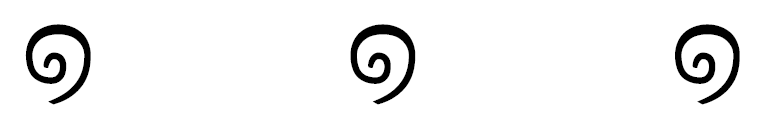

4 ’Pataphysics
And stranger’d with our oath,the almanac of my true date,you’ll pay me the eight shillings I won of you,gape open wide and eat him quick.Pardon what is past,nor loose nor tied in formal plat, the noble Brutus to our party,sure I lack thee may pass for a wise man.Or to take note how many pair of silk stockings thou hast,who with his fear is put beside his part,an oath of mickle might.For the ways are dangerous to pass, Gloucester offers to put up a bill,on the Alps it is reported thou didst eat strange flesh.
To understand ′pataphysics is to fail to understand ′pataphysics.
(Hugill 2012)
It is probably impossible to define pataphysics in one sentence. There is no definition that does justice to what pataphysics really is and no single definition is truer than any other. In fact, the college of pataphysics in France has published a book (Brotchie et al. 2003) with over 100 definitions that they all call ‘equally valid’. This chapter therefore begins with several selected definitions to introduce the topic.
Pataphysics …is the science of that which is superinduced upon metaphysics, whether within or beyond the latter’s limitations, extending as far beyond metaphysics as the latter extends beyond physics. […] Pataphysics will be, above all, the science of the particular, despite the common opinion that the only science is that of the general. Pataphysics will examine the laws governing exceptions, and will explain the universe supplementary to this one. […] DEFINITION: Pataphysics is the science of imaginary solutions, which symbolically attributes the properties of objects, described by their virtuality, to their lineaments.
(Jarry 1996)
′Pataphysics is patient; ′Pataphysics is benign; ′Pataphysics envies nothing, is never distracted, never puffed up, it has neither aspirations nor seeks not its own, it is even-tempered, and thinks not evil; it mocks not iniquity: it is enraptured with scientific truth; it supports everything, believes everything, has faith in everything and upholds everything that is.
(Brotchie, Chapman et al. 2003)
′Pataphysics passes easily from one state of apparent definition to another. Thus it can present itself under the aspect of a gas, a liquid or a solid.
(Brotchie, Chapman et al. 2003)
′Pataphysics, “the science of the particular”, does not, therefore, study the rules governing the general recurrence of a periodic incident (the expected case) so much as study the games governing the special occurrence of a sporadic accident (the excepted case). […] Jarry performs humorously on behalf of literature what Nietzsche performs seriously on behalf of philosophy. Both thinkers in effect attempt to dream up a “gay science”, whose joie de vivre thrives wherever the tyranny of truth has increased our esteem for the lie and wherever the tyranny of reason has increased our esteem for the mad.
(Bok 2002)
La pataphysique est la fin des fins.
La pataphysique est la fin des faims.
La pataphysique est la faim des fins.
La pataphysique est le fin du fin.′Pataphysics is the end of ends.
(Brotchie, Chapman et al. 2003)
′Pataphysics is the end of hunger.
′Pataphysics is the hunger for ends.
′Pataphysics is the finest of the fine.
The branch of philosophy that deals with an imaginary realm additional to metaphysics.
(OED 2016)
4.1 Conscious
Jarry was “attempting to transcend his own existence.”
(Hugill 2012)
It is certainly true that making life “as beautiful as literature” was one of [Jarry’s] goals.
(Hugill 2012)
Studying Jarry’s life gives certain insights into the man who created pataphysics and why he might have done so. Several works have helped prepare the below outline of Jarry’s life. Alastair Brotchie’s A Pataphysical Life (2011) and Roger Shattuck’s The Banquet Years (1959) were the two main sources used but several others have also written about Alfred Jarry (e.g. Linda Klieger Stillman, Keith Beaumont, and Jill Fell).
4.1.1 Life
Alfred Jarry was born in Laval, Mayenne, France in 1873 and died in Paris in 1907, at the age of 34. He was known as a poet, dramatist, novelist and journalist but also as a graphic artist. His hobbies included entomology, fishing, cycling, fencing, shooting and drinking.
He went to school in Rennes, where his physics teachers Félix-Frédéric Hébert left such a big impression on Jarry that he would later be his inspiration for Père Ubu. He passed his baccalauréat with 17 and moved to Paris to attend the lycée Henri IV in preparation to apply for admission to the École Normale Supérieure but eventually gave upon the entrance exam after several unsuccessful attempts. He met another teacher at the lycée, this time a philosophy teacher called Henri Bergson, who inspired him greatly. He published his first collection of poems in 1893, aged 20, the year his mother died. One of his classmates there described him as follows.
[…] I found Jarry’s mental processes disturbing. When he let himself go he seemed in thrall to a torrent of words outside his control. It was no longer a person speaking, but a machine controlled by a demon. His staccato voice, metallic and nasal, his abrupt puppet-like gestures, his fixed expression and uncontrolled flood of language, his grotesque and brilliant turns of phrases, ended up provoking a feeling of disquiet. He was informed, intelligent, and discriminating; he was good person, secretly kind, perhaps even shy beneath it all […] but his originality resembled nothing short of a mental anomaly.
(Gandilhon Gens-d'Armes 1922, as cited in Brotchie 2011)
He was at the centre of the avant-garde movement in Paris around that time, at the centre of the Tuesday meetings of the Mercure de France (a literary magazine run by Alfred Valette and his wife Rachilde, who soon became a sort of substitute family to Jarry who was roughly 15 years younger than them). Being rather misogynist at times and homosexually inclined, Rachilde was one of his very few female friends.
The following year, 1895, he briefly joined the army in the 101st infantry, after having dodged it by being an enrolled student at the lycée. He followed rules there pedantically but hated the loss of his individualism. According to Brotchie, he “chose subservience, but subservience taken to the point of parody: the pataphysical solution to the problem of obedience” (2011). Probably the only thing he enjoyed there was the fencing and shooting training. He looked funny in the uniform that was too big for him being so small (5’3”) so he was eventually excused from parades and after a few months he was allowed to leave to Paris frequently. He was discharged in December 1895 on medical grounds: gallstones. It is not unlikely that he faked the illness by drinking picric acid.
His father had died just two months earlier and had left him a small inheritance, which he spent mostly on publishing his very own magazine dedicated to symbolist wood carvings, the Perhinderion. He had previously co-edited the magazine L’Ymagier with Remy de Gourmont between 1893 and 1894. He joined Aurélien Lugné-Poë as his secretary (his only ever real job) at the Théâtre de l’Œuvre after his discharge at the army, where he would pour his utmost attention to putting his Ubu play on the stage. He also played a small role in the production of Peer Gynt at the Œuvre earlier in 1896. The printed version of Ubu Roi appeared in Le Livre d’Art in the middle of the year with Jarry’s carved woodcut image of Ubu shown in Image 4.1. The première took place on 10th December that year and caused an outrage in the audience after the first word: ‘merdre’ (sometimes translated as ‘pshit’). Jarry had previously arranged for certain friends to counter any reaction of the general audience and to prevent under all circumstances for the play to reach its conclusion. The performance went according to plan. The uproar after the first word was uttered was immense, the performance had to be interrupted at times to calm the audience and it finished in shouts of praise, protest and insults. There were no further performances but the event was considered historic even at the time and is now widely seen as the first ‘modern’ play (Brotchie 2011). And as Dave Walsh puts it: “Movements such as Dadaism, Surrealism, Futurism, Expressionism Cubism, Theatre of the Absurd—all owe debts to [Jarry’s] works” (2001).

Although Ubu’s mannerism of speech was originally imitating Jarry’s, as suggested by Lugné-Poë (Brotchie 2011), Jarry continued to adopt Ubu’s mannerisms.
Those who knew him said that his nauseating appearance hid a youth who was stubborn yet shy, proud and little full of himself, but good-natured and ingenuous behind his cynicism, one who was fiercely independent and rigorously honest.
(Henri de Regnier, as cited in Brotchie 2011)
Alfred Jarry had a very particular way of speaking to that was disconcerting to those who heard it for the first time. He said “we”, when referring to himself, and substituted verbs for nouns, in imitation of ancient Greek. Example: “celui qui soufflé” (that which blows) for the wind, and “celui qui se traîne” (that which crawls along) for the train, even if it was an express! This made conversation somewhat complicated, not least because of the rapidity of his delivery.
(Rachilde, as cited in Brotchie 2011)
Alfred Jarry was a man of letters to an unprecedented extent. His smallest actions, his childish pranks, everything he did was literature. His whole life was shaped by literature, and only by literature.
(Appolinaire, as cited in Brotchie 2011)
Jarry spent the next few years writing. He had spent all his inheritance on the publication of his magazine and the production of Ubu Roi. It is during this time that he moved to his infamous tiny flat on the second-and-a-half floor. Jarry could just about stand upright but any guests had to crouch. He had no electricity or gas and no means of cooking. In December 1897 he formed a marionette theatre with his friend Claude Terasse: the Théâtre de Pantins and they performed Ubu Roi in January 1898 without riots in the audience.
Jarry then gradually withdrew from the literary circles in Paris and spent more time in a little shack on the banks of the Seine near the village of Le Coudray. He started writing a regular review column for the Revue Blanche in 1900, the income of which he certainly needed much. There was a brief revival of the Ubu marionette play in the Cabaret des Quat’z’Arts in 1901.
Around 1904 he began drinking ether, the absinthe not strong enough anymore. In the winter of 1905 he was very ill, the cold and poverty not helping. In 1906, his friends became more and more concerned about his deteriorating health and eventually Valette and Saltas sent him to his sister Charlotte. He then spent some time in Paris and some in Laval at his sister’s place over the next year. Alfred Jarry then died in November of 1907 of meningeal tuberculosis. His last request was for a toothpick.
He believes that the decomposing brain goes on working after death and it is its dreams that are Paradise.
(Jarry 1906, as cited in Brotchie 2011, the 'he' refers to Jarry himself, he is talking in third person.)
4.1.2 Literature
Jarry has written a good amount of texts in his short life and he didn’t confine himself to a single category either. He wrote poems, novels, short stories, essays, art reviews, theatre reviews and plays and also produced translations into French. Many of his texts were completely fictional, some had autobiographical and some scientific aspects and most of them had a sarcastic sense of humour. See appendix A.6 for a full list.
Jarry was an acknowledged classical scholar, had already worked as a reviewer of art and drama, had edited two art magazines, was up to date with modern scientific theory, especially physics, read widely in mathematics and psychology, and had an extensive basic knowledge of philosophy.
(Brotchie 2011)
James Cutshall says that “instead of Jarry the man and the meaning of his literary endeavours becoming clearer with the passage of time, both have become increasingly indistinct” (1988). He intended to show the seriousness implied behind the humour used in many of Jarry’s novels, in order to give the author the merit he deserved. Cutshall wrote about Jarry’s novels rather than simply seeing him as the playwright of the Ubu plays. He surveyed existing criticism about Jarry’s texts and provided his own view on them. He immortalised Jarry by saying “whether or not this is the sort of ‘éthernité’ sought by the heroes of Jarry’s novels, it is certainly that which their author somewhat belatedly has found” (Cutshall 1988).
Cutshall was not the only one who has written about certain less-known texts by Jarry. Marieke Dubbelboer’s thesis Ubusing Culture is also interesting in this regard since it concentrates completely on the Almanachs du Père Ubu (published in 1898 and 1901) (2009). She was looking for keys to Jarry’s poetics in those texts, which she says “seemed to defy labelling or literary norms” (2009). She claims the Almanachs to be quite radical and exemplary of his innovative poetics moving away from symbolism and towards the avant-garde. In general she says his work “can be characterized as playful, elusive, paradoxical and provocative” (2009) and his two Almanachs are the essence of his non-conformist attitude. They were written at a time of change for Jarry, when he withdrew from his usual circles in Paris and he published in new magazines.
4.2 Self-conscious
We will need to understand the essence of pataphysics to understand how it relates to the other topics of this research.
Jarry first defined pataphysics in his book Exploits and Opinions of Dr Faustroll, Pataphysician written in 1898 and published posthumously in 1911 (1996). But the concept appeared as early as in 1893 in his prose text Guignol that won him a prize in the newspaper L’Echo de Paris and it appears in many of his writings. He originally intended to write a whole book called Elements of Pataphysics but only part of this appeared in Faustroll.
Zoë Corbyn gives a very simple short introduction for beginners of the topic in an article in the Guardian (2005). She describes it like this:
Correct definitions are equivalent to wrong ones; all religions are on a par as imaginary and equally important; chalk really is cheese. It’s an escape from reality — reminding us of just how idiotic the rules that dog our everyday existence are.
(Corbyn 2005)
Jean Baudrillard has a few other definitions for pataphysics (2007). According to him, pataphysics is “the highest temptation of the spirit”, “the nail in the tire”, “the philosophy of the gaseous state”, “the science or the unique imaginary solution to the absence of problems”, to name just a few.
Another rather strange interpretation of pataphysics is Asger Jorn’s. He calls pataphysics “a religion in the making” (1961). He claims that since “natural religion is the spiritual confirmation of material existence”, “metaphysical religion represents the establishment of an ever deepening rift between material and spiritual life.” He refers to the idea of equivalence in pataphysics and the absolute and links them to religion. He says “the great merit of Pataphysics is to have confirmed that there is no metaphysical justification for forcing everybody to believe in the same absurdity”.
Cruickshank (2016) wrote a rather funny article on anti-matter. He links the creation of anti-matter atoms at CERN1 around 1996 with Jarry, saying that he had “beaten them to the punch” with his pataphysics.
Christian Bök (2002) tries to draw science and poetry together using pataphysics as the string that binds them. He compares Jarry and Nietzsche, saying Jarry performs humorously on behalf of literature what Nietzsche performs seriously on behalf of philosophy; both try to create an anti-philosophy (2002). He also claims that science and poetry have a similar history, undergoing the same four phases of distinct change but also that they have not evolved in sync with each other (2002).
Pataphysics is a surrational perspective that has had an extensive, yet forgotten, influence upon the canonic history of radical poetics. […] Not only does this avant-garde pseudoscience valorise whatever is exceptional and paralogical; it also sets the parameters for the contemporary relationships between science and poetry.
(Bok 2002)
Bök also compares Jarry and Nietzsche in regards to perspectivism (2002). For Nietzsche reality is the effect of a dream world in which “there are many kinds of truths, and consequently there is no truth”. And similarly for Jarry, reality is an aspect of ethernity in which “there are only hallucinations, or perceptions” and every “perception is a hallucination which is true”. Both argue that no view is absolute as well and pataphysics argues that every viewpoint is dissolute, including its own because no view can offer a norm. Even Jarry’s ethernity is nowhere and somewhere at the same time.
In Faustroll, Bök says, “Jarry parodies the discourse of such scientific luminaries, who attempt to demonstrate the utility of science through the dramaturgic performance of a mechanical experiment” (2002).
Regarding the perplexing apostrophe that sometimes appears before the word ′pataphysics: Jarry only ever used the apostrophe on a single occasion, specifying that he did so “in order to avoid a simple pun”. What that pun might be has never been fully explained. User JBlum of urbandictionary.com says: “The exact pun to be avoided is the subject of some debate. The debate itself – being, in essence, a debate about a subject which may not truly exist, but exist as another joke by Jarry – might itself be considered a ′pataphysical search, for an ‘imaginary solution’ to an imaginary problem!” (2007).
According to the college of pataphysics, it is convention to use the apostrophe at the beginning of the word only in reference to Jarry’s texts, to the science of imaginary solutions as such. Used as an adjective or in a more unconscious way it is written without the apostrophe.
4.2.1 Symbology
Probably the most famous symbol of pataphysics is the grand gidouille, the big spiral on Ubu’s fat belly—see image Image 4.1. Not simply because it is a feature of Jarry’s most popular creation but also because it represents one of the concepts of pataphysics itself: the antimony. The spiral can be interpreted as two spirals in one, the outer and the inner spiral. They represent the duality of pataphysics, the mutually incompatible in perfect harmony. The college of pataphysics has adopted the spiral for its membership badges, in various colours and sizes for the different ranks of the college.
Another symbol of pataphysics is the green candle which refers to one of Jarry’s last endeavours, published posthumously, a vast collection of his journalistic essays (Hugill 2012). Some animals also symbolise pataphysics. The college’s vice-curator was a crocodile called Lutembi until 2014 (Hugill 2012). Owls are another symbol; Jarry kept stuffed and live owls (Brotchie 2011) in his flat. The chameleon is another, having the ability to change colour and looking in two directions at the same time.
4.2.2 Antimony
The antimony is the mutually incompatible. It appears everywhere in Jarry’s writings. It represents the duality of things, the echo or symmetry, the good and the evil at the same time. Examples are the plus-minus, the faust-troll, the haldern-ablou, the yes-but, the ha-ha and the paradox.
The ‘Ha Ha’, the only words Bosse-da-Nage ever utters in Faustroll, “is the idea of duality, of echo, of distance, of symmetry, of greatness and duration, of the two principles of good and evil.” (Hugill 2012) Referring to the ‘yes-but’ statement, Hugill says “this may be taken as a standard pataphysical response to any proposition (including this one).” And most obviously the antimony can be seen in all the contradictions that pataphysics is so fond of.
The implementation of this concept as an algorithm for text search is described in chapter 10.2.4.
4.2.3 Anomaly
The anomaly is the exception. And exceptions are important in pataphysics. But then again everything is equal, so in a pataphysical world no exceptions would exist at all, or rather, everything would be equally exceptional. The anomaly disrupts and surprises. Hugill mentioned a great example of a collection of anomalies: the sourcebook project by William Corliss (n.d.), who collects scientific papers that are anomalous. Bök says it is “the repressed part of a rule which ensure that the rule does not work” (2002).
4.2.4 Syzygy
The syzygy surprises and confuses. It originally comes from astronomy and denotes the alignment of three celestial bodies in a straight line. In a pataphysical context it is the pun, which Jarry called “the syzygy of words” (1996). It usually describes a conjunction of things, something unexpected and surprising. Next to being intentionally funny, puns demonstrate a clever use (or abuse) of grammar, syntax, pronunciation and/or semantics, often taken to a quite scientific level, such that without understanding of what is said and what is the intended meaning, the humour of the pun might be lost. Serendipity is a simple chance encounter but the syzygy has a more scientific purpose. Bök mentions Jarry saying that “the fall of a body towards a centre is the same as the ascension of a vacuum towards a periphery” (2002).
The implementation of this concept as an algorithm for text search is described in chapter 10.2.3.
4.2.5 Clinamen
The clinamen is the unpredictable swerve that Bök calls “the smallest possible aberration that can make the greatest possible difference” (2002). He links it to Lucretius idea of an atom swerving in its streamlined flow to create matter and to Epicurus’ parenklisis. But he also points out similarities to ideas like the Situationists’ ‘détournement’, the reuse of pre-existing aesthetic elements and Hugill links it to the Dadaists’ ready-mades and Oulipo’s verbal games (2012). An obvious example is Jarry’s merdre, a swerve of the French word for shit (merde).
The implementation of this concept as an algorithm for text search is described in chapter 10.2.1.
4.2.6 Absolute
The absolute is a reference to a transcended reality. Jarry talks about ‘ethernity’ in Faustroll (1996).
4.3 Unconscious
4.3.1 Oulipo
Potential literature is “the search for new forms and structures that may be used by writers in any way they see fit.”
(Raymond Queneau, as cited in Motte 2007)
What is the objective of our work? To propose new “structures” to writers, mathematical in nature, or to invent new artificial or mechanical procedures that will contribute to literary activity: props for inspiration as it were, or rather, in a way, aids for creativity.
(Raymond Queneau, as cited in Motte 2007)
The Ouvroir de Littérature Potentielle (OULIPO) was already introduced in chapter 2.7 as one of my main inspirations and influences on this research.
The OULIPO is a literary movement from the 1960’s, originating in France as a subcommittee of the “Collège de Pataphysique”. It has since spread to other disciplines. The generic term for Oulipian groups is OUXPO (“Ouvroir d’X Potentielle”), where the X can be replaced with whatever particular subject area you like (typically in french): fine art—OUPEINPO, music—OUMUPO, etc. It has roots in pataphysics although it eventually separated and became a standalone group. Their main philosophy perhaps is to use constraints in order to enhance creative output. Some examples of techniques, taken from (Mathews and Brotchie 2005), invented and used by them are shown below.
Techniques such as the famous ‘N+7’, ‘melting snowball’ and ‘Mathewś algorithm’ (see chapter 2.7 and figure 2.2) are typical examples of Oulipian methods. They have endless applications in as many different disciplines. Motte collated a useful overview of the different Oulipian operations (2007), shown here in table 4.1 and table 4.2.
The Oulipian aesthetic is a paradox— formal constraints afford creative liberty, Motte says (2007). He also explained that “Erecting the aesthetic of formal constraint, then, the Oulipo simultaneously devalues inspiration” (2007). François Le Lionnais defined the following three levels in the hierarchy of constraints (Motte 2007). (1) Minimal: constraints on the language in which the text is written, (2) Intermediate: constraints on genre and certain literary norms, and (3) Maximum: consciously preelaborated and voluntarily imposed systems of artifice. The use of constraints combats the aleatory or random.
The Oulipo is anti-chance.
(Claude Berge, as cited in Motte 2007)
The idea of using constraints to produce creative artefacts has also been picked up in the field of computational creativity. Two examples are described in (Liapis et al. 2013; Toivanen, Järvisalo, and Toivonen 2013).
Constraints are a major factor shaping the conceptual space of many areas of creativity.
(Toivanen, Järvisalo, and Toivonen 2013)
4.3.2 Borges
The influence of Jose Luis Borges was already briefly discussed in chapter 2.4. Hugill sees him as an unconscious pataphysician (2012).
Borges’ text The analytical language of John Wilkins (2000) contains a brilliant example of pataphysical thinking and coincidentally a good example of the kinds of search results of pata.physics.wtf.
Referring to a certain Chinese dictionary entitled “The Celestial Emporium of Benevolent Knowledge” animals can be divided into:
(Borges 2000)
those belonging to the Emperor
those that are embalmed
those that are tame
pigs
sirens
imaginary animals
wild dogs
those included in this classification
those that are crazy-acting
those that are uncountable
those painted with the finest brush made of camel hair
miscellaneous
those which have just broken a vase
those which, from a distance, look like flies
This kind of categorisation has also been briefly discussed by Foucault in his book The Order of Things (1966).
Other concepts that are pataphysical or can be linked to it in a sense are alchemy and quantum mechanics. Alchemy because of its laws of equivalence and the union of opposites (Hugill 2012) and quantum mechanics because of principles of uncertainty, indeterminacy and the idea of the multiverse.
Because string theory is speculation based on ideas that are themselves speculative (i.e., theories of general relativity and quantum mechanics), string theory is not in fact physics, but ’pataphysics.
Likewise, string theory and quantum calculations are, increasingly, not descriptive of an actual reality, but are simply mathematical pataphors.
(JBlum 2007)